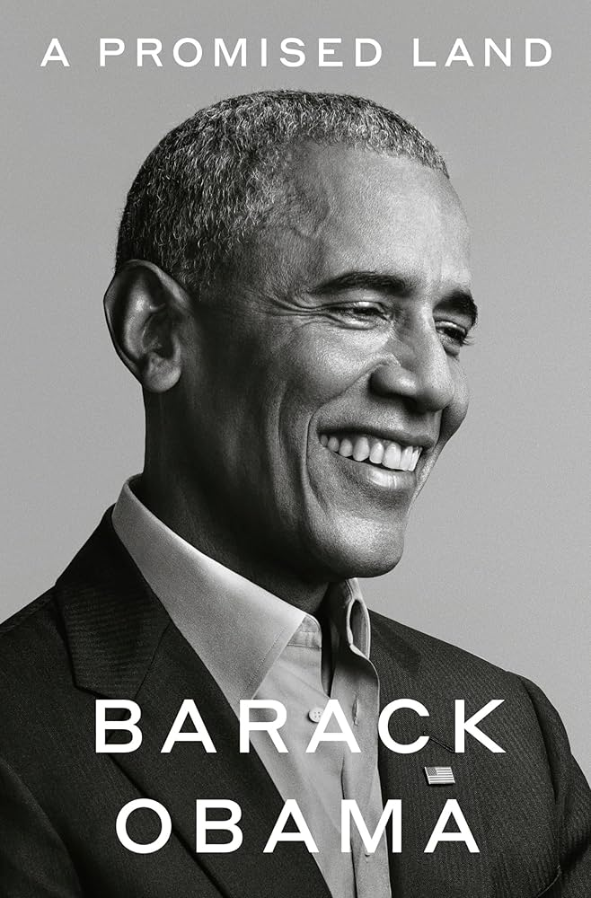

Right before the start of this semester, I took a trip with some friends from my undergraduate university. We went to Italy and visited Milan, Florence, and Rome. The highlight of my trip was seeing the Italian Grand Prix, which is a Formula 1 race. As a fan of the Ferrari team, it was a ton of fun getting to see them win the race on their home track. Also, out of the three cities that I visited, I have to say that Florence was my favorite since it was beautiful and had so much history to it without being as chaotic as Rome.
This is my favorite restaurant because it offers affordable and authentic Japanese food. I love to get their dinner sets, which come with a bowl of rice, miso soup, a salad, and a protein of your choice. They also have some classic Japanese street food options such as takoyaki or okonomiyaki. Lots of variety without breaking the bank!
This is Taiwanese braised beef noodle soup and is my absolute all time favorite dish. I like to eat it after a long session of work or on a cold or rainy day. A traditional way of serving this dish (which I also enjoy) is having some pickled mustard greens on the side. The acidity helps cut into the richness of the beef broth. It is the ultimate comfort meal!
| Title | Image | Author | Summary |
|---|---|---|---|
| A Game of Thrones |

|
George R. R. Martin | A grand high fantasy epic set in Westeros, where several houses try to occupy a seat in the Iron Throne and rule the Seven Kingdoms. |
| Dune | Frank Herbert | Heir to House Atreides and the Duke of Arrakis, Paul seeks revenge on the Harkonens who plotted against his family. He assumes the role of a messianic figure in a Fremen prophecy in the process. | |
| Seveneves | Neal Stephenson | The moon spontaneously explodes and it causes a global-scale apocalyptic situation in which the human race bands together to a last-minute attempt toseek asylum on the international space station. | |
| Project Hail Mary |

|
Andy Weir | A man wakes up in a spaceship by himself without a clue as to how he got there. As his memory slowly comes back to him, he has to navigate the depths of outer space and fulfill his original mission. |
| A Promised Land |  | Barrack Obama | Former president Barrack Obama recounts his experiences as a black man seeking a political career in the United States and recalls some of his struggles in his first term of presidency. |